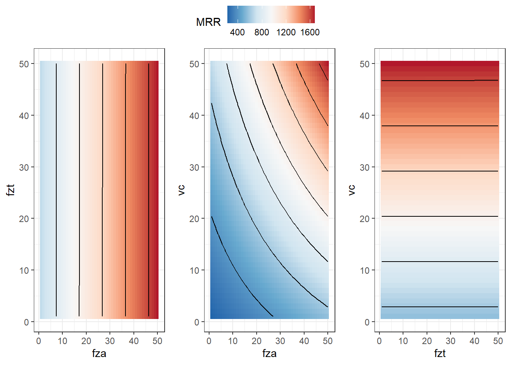
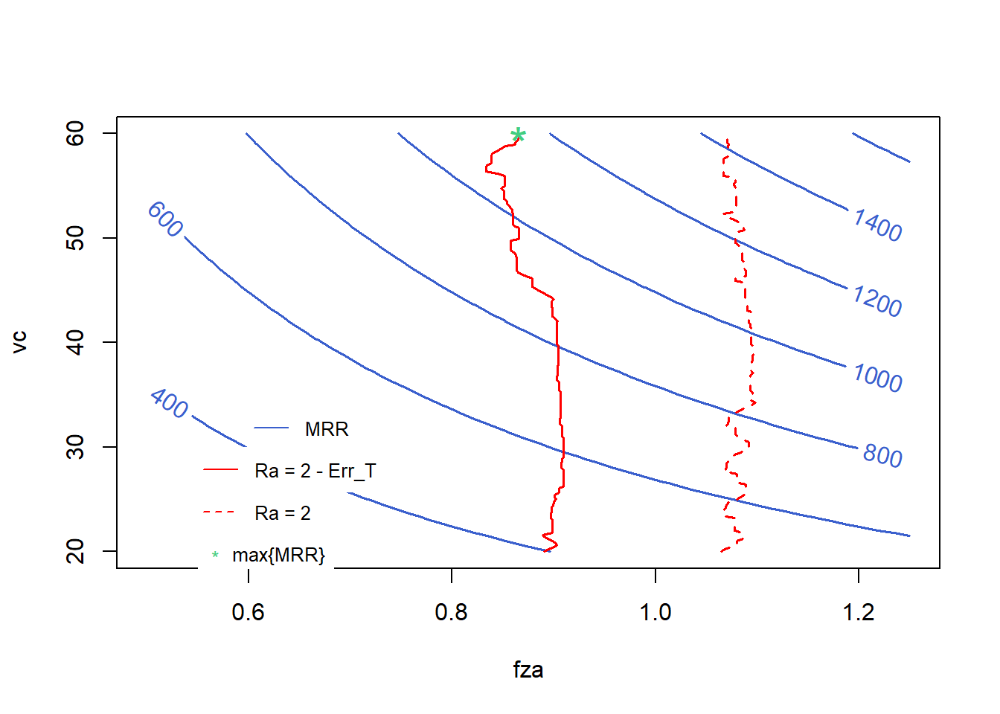

fza fzt vc lc Ra
1 0.50 0.10 40 emulsion 1.915556
2 1.25 0.10 40 emulsion 3.515556
3 0.50 0.20 40 emulsion 1.065556
4 1.25 0.20 40 emulsion 1.965556
5 0.50 0.15 20 emulsion 1.765556
6 1.25 0.15 20 emulsion 3.265556MRR optimization subject to roughness constraint learning 1
Loading libraries, defining experimental design, and getting measurement results.
The same as done previously.
Cubist model
normalized_rec <-
recipe(Ra ~ ., data = plan_train) %>%
step_normalize(fza,fzt,vc) %>%
step_dummy(all_nominal_predictors())
cubist_spec <-
cubist_rules(committees = 78, neighbors = 7) %>%
set_engine("Cubist")
cubist_wflow <-
workflow() %>%
add_model(cubist_spec) %>%
add_recipe(normalized_rec)
cubist_final_fit <- fit(cubist_wflow, data = plan_train)augment(cubist_final_fit, new_data = plan_test) %>%
rsq(truth = Ra, estimate = .pred)# A tibble: 1 × 3
.metric .estimator .estimate
<chr> <chr> <dbl>
1 rsq standard 0.916augment(cubist_final_fit, new_data = plan_test) %>%
rmse(truth = Ra, estimate = .pred)# A tibble: 1 × 3
.metric .estimator .estimate
<chr> <chr> <dbl>
1 rmse standard 0.288cubist_fit <- cubist(x = plan_train[,1:4],
y = plan_train$Ra,
committees = 78, neighbors = 7)
tidyRules(cubist_fit)# A tibble: 78 × 9
id LHS RHS support mean min max error committee
<int> <chr> <chr> <int> <dbl> <dbl> <dbl> <dbl> <int>
1 1 <NA> (1.7705557) + (2.48 * … 30 2.36 0.866 4.72 0.402 1
2 2 <NA> (1.7705556) + (2.48 * … 30 2.36 0.866 4.72 0.402 2
3 3 <NA> (1.7705558) + (2.48 * … 30 2.36 0.866 4.72 0.402 3
4 4 <NA> (1.7705556) + (2.48 * … 30 2.36 0.866 4.72 0.402 4
5 5 <NA> (1.7705558) + (2.48 * … 30 2.36 0.866 4.72 0.402 5
6 6 <NA> (1.7705556) + (2.48 * … 30 2.36 0.866 4.72 0.402 6
7 7 <NA> (1.7705558) + (2.48 * … 30 2.36 0.866 4.72 0.402 7
8 8 <NA> (1.7705556) + (2.48 * … 30 2.36 0.866 4.72 0.402 8
9 9 <NA> (1.7705558) + (2.48 * … 30 2.36 0.866 4.72 0.402 9
10 10 <NA> (1.7705556) + (2.48 * … 30 2.36 0.866 4.72 0.402 10
# ℹ 68 more rowsOptimization of material removal rate with Ra contraint learning
First MRR function is defined.
MRR <- function(x){
z <- 2
Db <- 25
Dt <- 14
Dh <- Db-Dt
f1 <- 250*z*(Db^3/(Dh*Dt))*x[3]*((x[1]*10^-3)/x[2])*sqrt((x[1]*10^-3)^2 + (x[2]*Dh/Db)^2)
return(f1)
} Writing Cubist constraint. Change lc ("emulsion" or "mql") as desired.
g1 <- function(x) {
g1 <- predict(cubist_final_fit, new_data = data.frame(fza = x[1],
fzt = x[2],
vc = x[3],
lc = "emulsion")) - (2 - 0.4381)
return(g1)
}Testing objective function and constraint.
x_test <- c(0.875, 0.15, 40)
MRR(x_test)[1] 781.3187g1(x_test) .pred
1 0.4802455Fitness function considering Objective function and penalty term regarding constraint.
fitness <- function(x)
{
f <- MRR(x)
pen <- sqrt(.Machine$double.xmax) # penalty term
penalty1 <- max(g1(x),0)*pen # penalisation for 1st inequality constraint
f - penalty1 # fitness function value
}Defining algorithims to the optimization.
ALGOS <- c("ALO", "DA", "GWO", "MFO", "WOA")
# c("ABC", "ALO", "BA", "BHO", "CLONALG", "CS", "CSO", "DA", "DE", "FFA", "GA", "GBS", "GOA", "GWO", "HS", "KH", "MFO", "PSO", "SCA", "SFL", "WOA")
# Convergiram:
# "ABC", "ALO", "DA", "DE", "GWO", "MFO", "PSO", "WOA"
# Tempo satisfatorio entre os que convergiram:
# "ALO", "DA", "GWO", "MFO", "WOA"Optimization.
result_meta$result
var1 var2 var3
ALO 0.8657019 0.2 60.00000
DA 0.8657019 0.2 60.00000
GWO 0.8656254 0.2 59.98611
MFO 0.8657019 0.2 60.00000
WOA 0.8657018 0.2 60.00000
$optimumValue
optimum_value
ALO 1159.478
DA 1159.478
GWO 1159.107
MFO 1159.478
WOA 1159.478
$timeElapsed
user system elapsed
ALO 68.00 1.86 71.14
DA 70.67 1.75 72.98
GWO 64.83 1.67 67.06
MFO 58.75 1.65 60.44
WOA 60.79 1.66 63.02Plotting MRR function
x1_range <- c(0.5, 1.25)
x2_range <- c(0.1, 0.2)
x3_range <- c(20, 60)
x1 <- seq(x1_range[1], x1_range[2], length.out = 50)
x2 <- seq(x2_range[1], x2_range[2], length.out = 50)
x3 <- seq(x3_range[1], x3_range[2], length.out = 50)
z <- array(0, dim = c(length(x1), length(x2), length(x3)))
for (i in 1:length(x1)) {
for (j in 1:length(x2)) {
for (k in 1:length(x3)) {
z[i, j, k] <- MRR(c(x1[i], x2[j], x3[k]))
}
}
}
library(ggpubr)
library(reshape2)
Attaching package: 'reshape2'The following object is masked from 'package:tidyr':
smithsdf <- melt(z)
colnames(df) <- c("x1", "x2", "x3", "z")
contour_plot <- ggplot(df, aes(x = x1, y = x2, z = z)) +
geom_tile(aes(fill=z)) +
scale_fill_distiller(palette = "RdBu",
direction = -1) +
geom_contour(color = "black") +
labs(x = "fza", y = "fzt", fill = "MRR") +
theme_bw() #+
# ggtitle("MRR(fza, fzt)")
contour_plot2 <- ggplot(df, aes(x = x1, y = x3, z = z)) +
geom_tile(aes(fill=z)) +
scale_fill_distiller(palette = "RdBu",
direction = -1) +
geom_contour(color = "black") +
labs(x = "fza", y = "vc", fill = "MRR") +
theme_bw() #+
# ggtitle("MRR(fza, vc)")
contour_plot3 <- ggplot(df, aes(x = x2, y = x3, z = z)) +
geom_tile(aes(fill=z)) +
scale_fill_distiller(palette = "RdBu",
direction = -1) +
geom_contour(color = "black") +
labs(x = "fzt", y = "vc", fill = "MRR") +
theme_bw() #+
# ggtitle("MRR(fzt, vc)")
ggarrange(contour_plot,contour_plot2,contour_plot3, common.legend = TRUE, nrow = 1)
plotting decision space with objective function and learned constraint
h_x_add_err <- function(x) {
h <- as.numeric(predict(cubist_final_fit, new_data = data.frame(fza = x[1],
fzt = x[2],
vc = x[3],
lc = "emulsion"))) - 2
return(h)
}find_x1 <- function(x3, x2) {
lower <- 0.82
upper <- 1
while (upper - lower > 1e-6) {
mid <- (lower + upper) / 2
result <- g1(c(mid, x2, x3))
if (result == 0) {
return(mid)
} else if (result < 0) {
lower <- mid
} else {
upper <- mid
}
}
return((lower + upper) / 2)
}
x3_values <- seq(20, 60, length = 200)
x2 <- 0.200
x1_values <- sapply(x3_values, find_x1, x2 = x2)
result_df <- data.frame(x1 = x1_values, x3 = x3_values)find_x1_ <- function(x3, x2) {
# Define um intervalo inicial para x1
lower <- 1
upper <- 1.2
while (upper - lower > 1e-6) {
mid <- (lower + upper) / 2
result <- h_x_add_err(c(mid, x2, x3))
if (result == 0) {
return(mid)
} else if (result < 0) {
lower <- mid
} else {
upper <- mid
}
}
return((lower + upper) / 2)
}
x1_values2 <- sapply(x3_values, find_x1_, x2 = x2)
result_df2 <- data.frame(x1 = x1_values2, x3 = x3_values)
xys <- expand.grid(x1=x1,x3=x3)
xys <- data.frame(x1 = xys$x1,
x2 = 0.2,
x3 = xys$x3)
zs2 <- matrix(apply(xys,1,MRR), nrow = length(x1)) # previsao modelo MRR
contour(x=x1, y=x3, z=zs2, col = "royalblue3", # "#C71585",
labcex = 1, method = "edge",
xlab = "fza", ylab = "vc", lwd = 1.5)
lines(result_df, col = "red", lwd = 1.5)
lines(result_df2, col = "red", lty = 2, lwd = 1.5)
points(0.8657019, 60, pch = "*", col = "seagreen3", cex = 2)
legend(0.6, 34, legend=c("MRR"),
col=c("royalblue3"), lty=c(1), pch = c(NA),
cex = .8, box.lty=0)
legend(0.55, 30, legend=c("Ra = 2 - Err_T"),
col=c("red"), lty=c(1), pch = c(NA),
cex = .8, box.lty=0)
legend(0.55, 26, legend=c("Ra = 2"),
col=c("red"), lty=c(2), pch = c(NA),
cex = .8, box.lty=0)
legend(0.55, 22, legend=c("max{MRR}"),
col=c("seagreen3"), pch = c("*"),
cex = .8, box.lty=0)